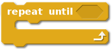
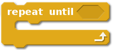

repeat as a keyword¶
Summary
Adds a repeat keyword that can be used to indicate 4 different
versions of a loop.
Limitation: repeat statements must be on a single line of
code ending with a colon [and an optional end of line comment].
From blocks to textual code¶
Repeating a series of instructions is something that is often done when running programs. Block-based programming environments, such as Scratch, Blockly, GP, etc, have different blocks that can be used for this purpose. For example:
 

{kind=link}
and a “repeat forever” loop (shown in French below):

Depending on the block-based environment one uses, there are up to four four main such cases, which can be written as follows in standard Python:
for _ in range(n):
'''Repeat a series of instruction n times, without having to
keep track of the specific iteration number
'''
while condition:
'''Repeat a series of instruction an unspecified number of times,
while a certain condition is met.
'''
while not condition:
'''Repeat a series of instruction an unspecified number of times,
until a certain condition is met.
'''
while True:
'''Repeat a series of instruction an unspecified number of times,
until a something inside the loop triggers a "break" to end the loop.
'''
Inspired by the choices made by creators of block-based programming environments, in my AvantPy project, I included a few additional keywords to cover the 4 cases above in a natural way:
repeat n:
# code
repeat while condition:
# code
repeat until condition:
# code
repeat forever:
# code
A concrete example¶
First, TygerJython’s explanation
Why did you add a «repeat»-statement to the language?
One of the most difficult aspects for programming novices are
variables and loops, especially when combined.
With the repeat-statement we provide the means to create a looping
construct without the need for variables.
This way, you can introduce one concept after the other and make it easier for the students to understand them.
So far, our experience with «repeat» has been very encouraging.
Suppose that I am teaching programming to beginners using Python’s turtle module. So far, we’ve only written programs that use one instruction per line:
from turtle import forward, left
# Draw a square
forward(100)
left(90)
forward(100)
left(90)
forward(100)
left(90)
forward(100)
left(90)
I wish to use this to show to students how we can have computers repeat a given set of instructions, instead of typing them multiple times. Using Python, here’s the natural way to do this:
from turtle import forward, left
# Draw a square
for variable in range(4):
forward(100)
left(90)
In doing so, I need to introduce all at once many new concepts and additional terms:
the concept of an indented code block preceded by a colon;
two keywords,
forandin;the use of a variable, which is some quantity with a completely irrelevant name in this example, except that it cannot be a keyword;
the introduction of a built-in function,
range(), which, unlikeforward()orleft(), does not have a visual representation.
By contrast, using the repeat keyword, the above can be written as:
from turtle import forward, left
# Draw a square
repeat 4:
forward(100)
left(90)
and we only need to introduce fewer new topics:
the concept of an indented code block preceded by a colon;
one new keyword:
repeat.
A final word about the motivation¶
We’ve already mentioned the usage in blocks-based programming environment
of repeat, or some similar alternative in other languages. repeat
was also the clearer possibility for people unfamiliar with programming jargon
as found by Andreas Stefik and Susanna Siebert, and published
“An Empirical Investigation into Programming Language Syntax.”
ACM Transactions on Computing Education, 13(4), Nov. 2013.
Implementing repeat¶
From the following API generated by Sphinx, you can get access to the actual code which, by now, should be fairly straightforward to understand.
repeat.py¶
Adds repeat as a keyword to write loops. The four constructs supported
are:
repeat n:
# code
repeat while condition:
# code
repeat until condition:
# code
repeat forever:
# code
For example:
repeat 3:
a = 2
repeat a*a:
pass
is equivalent to:
for unique_variable_name_1 in range(3):
a = 2
for unique_variable_name_2 in range(a*a):
pass
-
exception
ideas.examples.repeat.RepeatSyntaxError[source]¶ Currently, only raised when a repeat statement has a missing colon
-
ideas.examples.repeat.add_hook(show_original=False, show_transformed=False, predictable_names=False, verbose_finder=False)[source]¶ Creates and adds the import hook in sys.meta_path
-
ideas.examples.repeat.convert_repeat(source, predictable_names=False)[source]¶ Replaces instances of:
repeat forever: -> while True: repeat while condition: -> while condition: repeat until condition: -> while not condition: repeat n: -> for _uid in range(n):
A complete repeat statement is restricted to be on a single line ending with a colon (optionally followed by a comment). If the colon is missing, a
RepeatSyntaxErroris raised.
-
ideas.examples.repeat.generate_predictable_names()[source]¶ Generator that yields predictable variable names - useful for testing